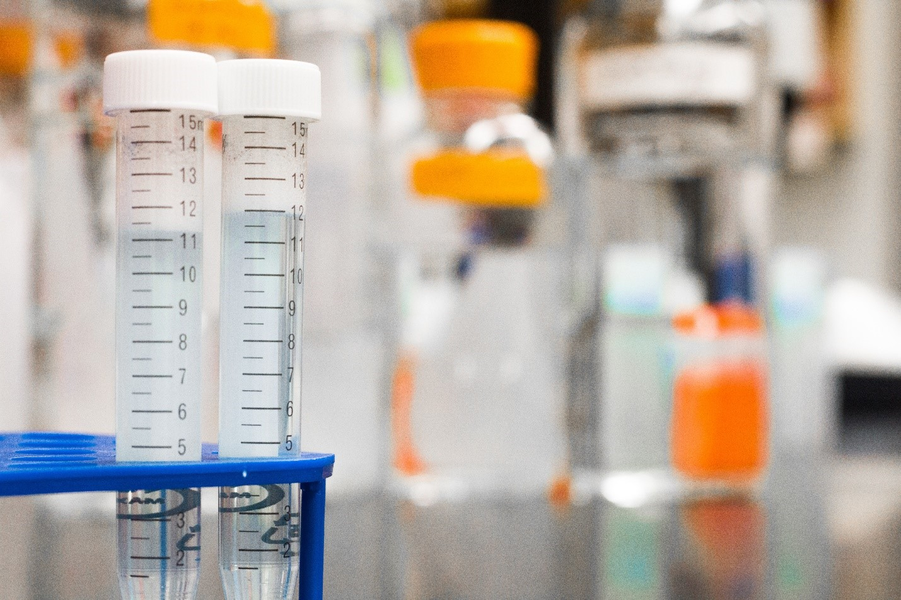

 I am a trained experimental chemist. I love exploring new research areas and have always enjoyed the learning process. I believe in constantly updating and evolving oneself. I am currently a student at Wake Tech Community College learning Programming and Development, which I think will give another dimension to my skill set. Programing used for the structural analysis of macro molecules have always fascinated me. I believe my current endeavor will empower me with the knowledge for pursuing computational chemistry and also venture into the field of computer science and information technology.